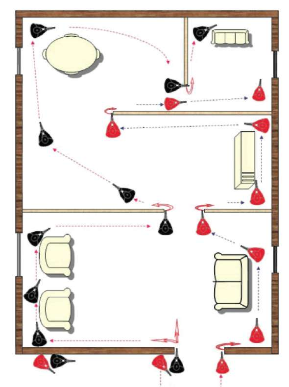
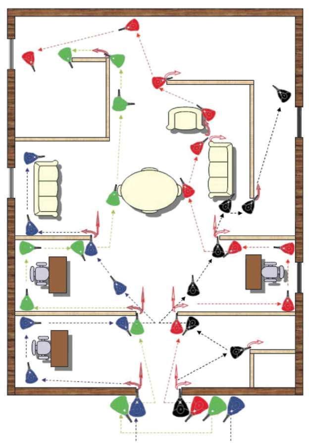

Şekil-26) Bir kişi ile kapalı alanda operasyon 4.2.2. İki Kişi ile Kapalı Alanda Operasyon Giriş yapılacak olan alanın kapısı kapalıysa, kapının sağına ve soluna birer kişi tertiplenerek, kapı açma kolunun olduğu yöndeki kişi kapıyı açar ve gir komutunu verir. Giriş yapılacak alanın kapısı açıksa, kapıya yanaştığınız yönde arka arkaya durarak, öndeki bir numara içeri giriş yapmadan, silahını içeriye doğrultarak aynı zamanda gözüyle alanın fotoğrafını çekip kapıya doğru herhangi bir tehlikenin olup olmadığını, varsa bulunduğu yerden kapı köşesini de kendine sütre yaparak etkisiz hâle getirir. Eğer içeride ilk bakışta bir tehlike yoksa arkasındaki iki numaralı arkadaşına kapının öteki yönüne geç komutunu vererek, kapının her iki tarafına tertiplenmesi sağlanır.
Bir sonraki aşamada bir numaranın vereceği gir komutuyla aynı anda içeri giriş yapıp herkes kendi köşesini açtıktan sonra, koordineli biçimde, birbirinin emniyetini alarak ve yardımlaşarak, sırasıyla tehlike arz eden yer ve eşyalar kontrol edilir. Duruma göre bakılması gereken başka alanlar varsa ve kontrol edilen alana emniyetçi bırakılması gerekiyorsa, iki kişiden biri emniyetçi bırakılır, diğer kişi operasyona devam eder. (Bakınız Şekil-27) 170

BÖLÜM
OPERASYON VE OPERASYON TEKNİKLERİ
Şekil-27) İki kişi ile kapalı alanda operasyon 4.2.3. Üç Kişi ile Kapalı Alanda Operasyon Üç kişi ile operasyon yaparken kapıların kapalı veya açık olma durumları aynen iki kişiyle yapılan operasyonda olduğu gibi, bir ve iki numaranın koordi-nesiyle aynı kapı açma tekniği uygulanarak giriş yapılır.
İkili girişten farklı olarak, üçlü girişte, bir numaranın arkasında bulunan üç numara, bir ve iki numara giriş yapıp köşeleri açtıktan sonra, hemen arkalarından herhangi bir köşe açmadan giriş yaparak tehlikeli olan ilk yeri kontrol eder veya köşelerde sorun yaşayan arkadaşına destek verir. Üçlü veya birden fazla kişiyle yapılan girişlerde, dikkat edilmesi gereken önemli konulardan biride, girişlerde, birbirinin atış alanına girmeden, birbirinin emniyetini alarak sırasıyla en yakınından başlayıp bir sonrakine veya tehlikeli olabilecek alanları öncelikle koordineli bir şekilde kontrol ederek, alanın emniyeti alınmasıdır.
Bir sonraki aşama olarak kontrol etmeniz gereken başka alanlar varsa duruma göre emniyetini aldığınız yere emniyetçi bırakmanız gerekiyorsa, bir kişi emniyetçi kalarak, diğer iki kişi operasyona devam eder. (Bakınız Şekil-28) 171
Şekil-28) Üç kişi ile kapalı alanda operasyon UYARI
Birden fazla kişiyle yapılan girişlerde, dikkat edilmesi gereken önemli konulardan biri de birbirinin atış alanına girmeden, birbirinin emniyetini alarak sırasıyla en yakınından başlayıp bir sonrakine veya tehlikeli olabilecek alanları öncelikle koordineli bir şekilde kontrol ederek, alanın emniyeti alınmasıdır.
4.2.4. Dört Kişi ile Kapalı Alanda Operasyon Dörtlü giriş yaparken, bir ve iki numara bir önceki girişlerde olduğu gibi kapı açma ve kapı emniyetini alma tekniklerini uygulayarak, üç numara bir numaranın arkasında kalırken, dört numara iki numaranın arkasına geçerek, kapının her iki tarafına tertiplenir. Bir numaranın vereceği gir komutuyla bir ve iki numaralar bir eş oluşturarak köşeleri açıp arkadan giriş yapacak olan üç ve dört numaralardan oluşan eşlere, giriş yapma imkânı sağlarlar. Bir ve 172

BÖLÜM
OPERASYON VE OPERASYON TEKNİKLERİ
iki numaranın arkasından giren üç ve dört numara kendilerine en yakın olan kontrol edilmesi gereken yeri kontrol edip, kademeli olarak bir ve iki numaranın bir sonraki yere bakmalarını sağlarlar.
Burada dikkat edilmesi gereken nokta, eşler hem kendi arkadaşıyla hem de diğer eşlerle koordineyi sağlayarak alanı kontrol edip, duruma göre kontrol edilen yere emniyet bırakılacaksa, bir veya iki emniyetçi bırakılarak diğer kişiler operasyona devam eder. (Bakınız Şekil-29) Şekil-29) Dört kişi ile Kapalı Alanda Operasyon 4.3. KORİDOR VE KORİDORLARA AÇILAN KAPALI ALANLARDA OPERASYON
Son tutunma noktasında giriş unsuru tertiplendikten sonra, gir komutuyla önce koridorun emniyeti alınır, varsa hedefler ilk giren bir ve iki numara tarafından etkisiz hâle getirilir.